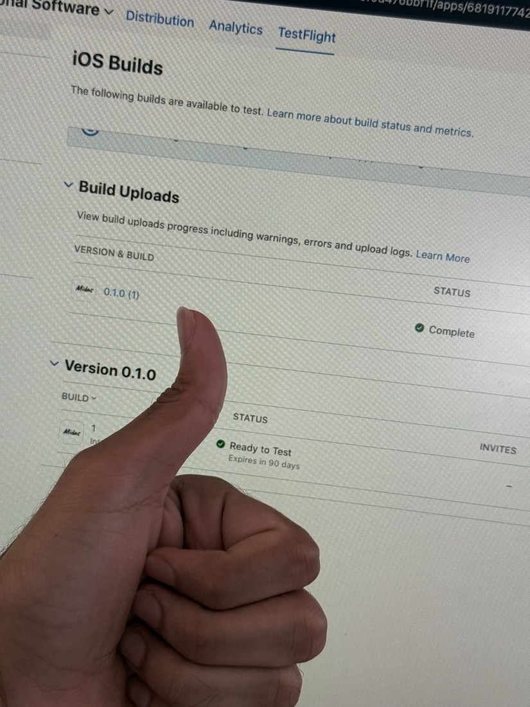

Almost every piece of software on your phone was made for millions of people at once, which is why so much of it only almost fits. You learn its habits and work around the parts that don't suit you, and after a while you stop noticing you're doing it. Personal software starts from the other end. It's made for one person, or a handful of people who know each other, and it only has to make sense to them. For most of the history of computing that was never worth anyone's time, because making software was slow and expensive and only paid off when millions of people used it. That has changed a lot in the last couple of years. Midas is my attempt at letting anyone have software of their own.
Built repair. Everyone I showed it to had their mind blown. Something's off, you swipe down, draw on it and say what's wrong, and your copy comes back fixed.
The gesture took three tries. Swipe won because it's what your hand already wants to do.
scribble→circle→three-finger swipe
Repair, start to finish.
Week 2 · October 18, 2026
Built the first Sidekicks for a few friends: reminders, and medicine reminders. Under them, a widget builder, so any Sidekick can put itself on your home screen.
Midas started with six friends and a photo album we couldn't have. The long version is in my essay, The Case for Personal Software. The short version is that I couldn't stop asking why software meant for just a few people is still so hard to have, and after a while, reading and writing about it wasn't enough.
So I started building Midas.
The first thing I made with it was for me. My reminders, set up the way I like them, with the ones I already had brought along.
This afternoon I sent the first version to Apple, and it came back ready to test.

This week I'm getting it into the hands of a few friends. I'll sit with each of them, find out what they actually need, and make a few things just for them.